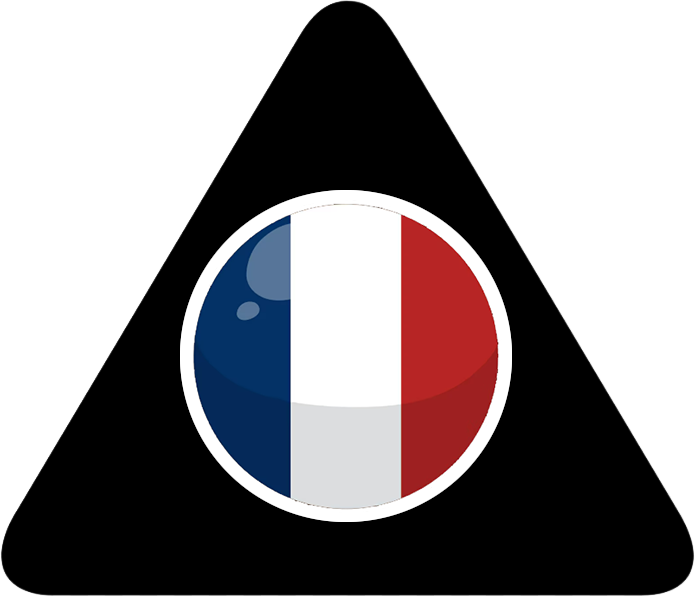

Pronunciation of the letter G
Two major rules ... and two exceptions

/g/
Hard G
a
o
u
å
gata, god, gul, gås
Rule
47%
/j/
Soft G
e
i
y
ä
ö
ge, gick, gynna, gärna, göra
Rule
20%
/sj/
just as "sju" (seven)
French
gelé, regi, logi, legär, arrangör
Exception
6%
/g/
Hard G
Latin, Greek, Science
agera, magi, legym, vulgär, vigör
Exception
27%
Light Mode
Exercise